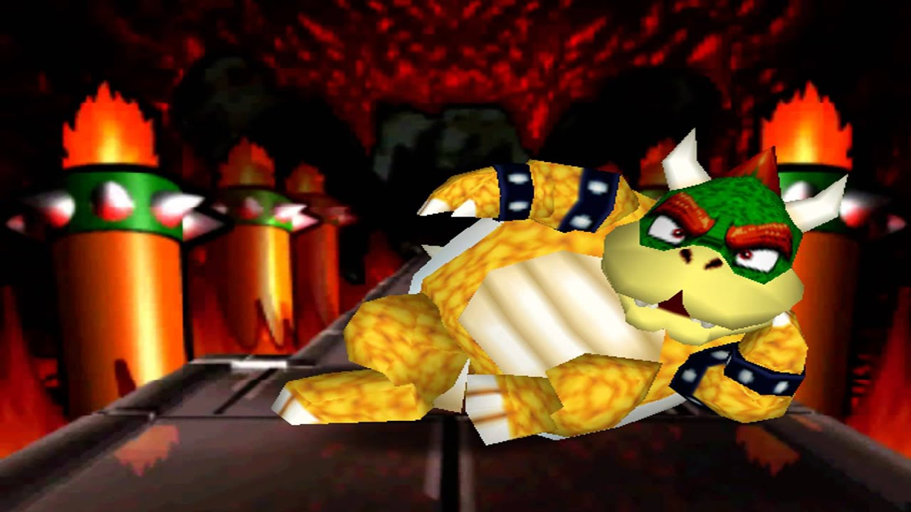

Bowser looking for hot girls in his area

In a stunning pivot from kidnapping princesses, Bowser — the notorious King of the Koopas — has been spotted on dating apps across the Mushroom Kingdom declaring: “Looking for hot girls in my area.”
“Kidnapping is outdated,” Bowser told The Misinformer in an exclusive sit-down. “I’m rebranding. These days, love is about consent, charisma, and a killer profile pic.”
Bowser’s dating profile reportedly features shirtless fire-breathing selfies, blurry selfies in lava-lit castles, and a bio that reads: “Tired of chasing princesses who run. Swipe right if you're loyal like a Goomba.”
Peach, reached for comment, simply said: “Block him.” Mario declined to speak, but Luigi was seen giggling while installing Tinder on Bowser’s phone.
The Koopacorp board is allegedly concerned about Bowser’s shift from villainy to vulnerability, but his new monetization model — BowserDate™ — is already being beta tested in select Goomba villages.
“At the end of the day,” Bowser said, “all I really want is someone to storm castles with... and maybe co-own a lava lake timeshare.”